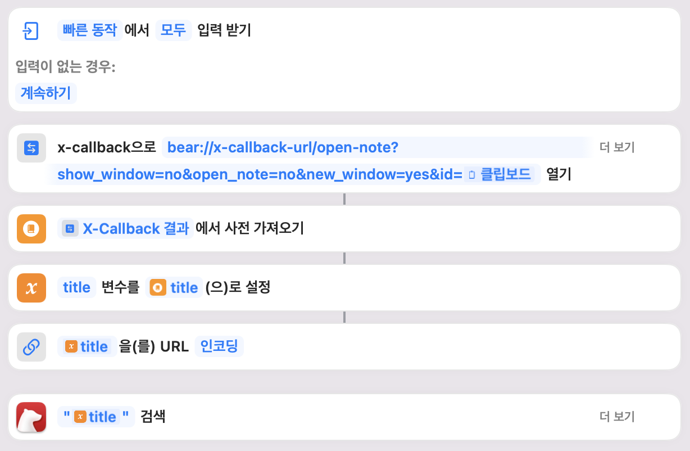

백링크는 해롭다(Backlinking Is Not Very Useful — Often Even Harmful • Zettelkasten Method). 나의 제텔카스텐에서도 백링크는 유용하지만 핵심 기능이 아니라고 적었다.
(백 링크는) 내가 판단하기에는 유용한 기능이 아니다. 앞서도 말했지만 연결을 직접 맺는 것이 중요한 시스템에서 백 링크는 자동으로 연결해 주고, 편하게 편집할 수 있게 도와준다. 이후에 언급하겠지만 제텔카스텐에서 ‘편하다’는 것은 생각이 충돌하지 못하게 하는 것일 수 있다.
그러나 백링크는 필요하다. 놓치고 있는 연결이 있을 수 있다. 그래서 여전히 자동 백링크를 만들지는 않지만, 문서의 제목을 검색하는 단축어를 만들었다.
bear에서 백링크를 만들어주는 GitHub - cdzombak/bear-backlinks: Automated backlinks for notes in Bear.app, on macOS. 코드를 참고하며 생각했다.
⌥+⇧+⌘+I
bear://x-callback-url/open-note?id={식별자}
""를 붙여 검색한다(bear에서 제공하는 단축어 기능)
이렇게 단축어를 만들고 맥에서 키보드 단축키 추가 기능을 이용해 단축키로 지정할 수 있다. 그러면 단축어를 이용해 현재 문서를 링크하고 있는 문서들을 쉽게 검색할 수 있다.
hammerspoon은 맥에서 활용하기 좋은 매크로 도구이다. Hammerspoon 튜토리얼 00 - 시작하기 - 기계인간 John Grib을 통해 처음 접하게 되었고 몇 가지 기능을 활용하고 있다. Hammerspoon 튜토리얼 02 - 클립보드 확장 기능을 만들어 봅시다 - 기계인간 John Grib 위 두 글을 활용해 기능을 만들었다. 단축어 기능은 패드나 폰에서도 활용할 수 있어서 hammerspoon에서 단축어를 실행해 만들도록 했다.
식별자를 링크하는 문서를 조회하는 게 아니다보니 제목에 일부만 매칭되어도 검색에 포함된다. 가령 하루라는 문서의 백링크를 검색하려고 하면 오늘 하루 내일 하루 문서도 검색에 포함된다. 백링크의 정확한 방식해당 문서를 링크한 문서를 검색한다이 아닌 문서의 제목을 포함하는 문서를 검색하는 방식이라 조금 아쉽지만 링크 문서를 검색하는 기능을 bear에서 지원하지 않기 때문에 이 방식으로 당분간 사용해보려고 한다.